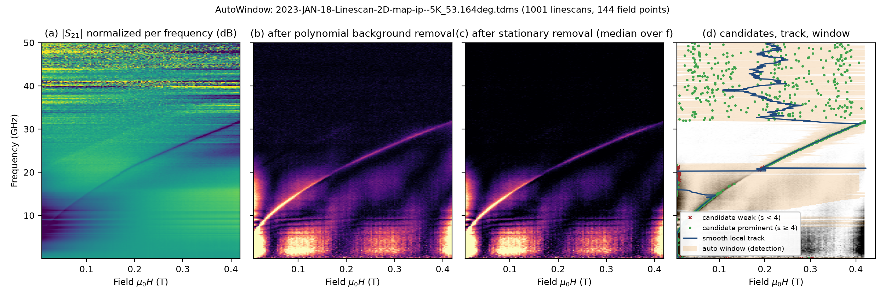

AutoWindow¶
Most critical step: wrong window ⇒ wrong values without optimizer error. Principle: the resonance moves with f (Kittel), disturbances sit at fixed fields.
| Step | Function | Core |
|---|---|---|
| 1 background removal per linescan | _detrend_residuum |
polynomial (degree ≈ 1 per 0.5 T, 2…6) on Re/Im; residual \|S21 − P(B)\| |
| 2 stationary removal (common field grid only) | _stationaeren_untergrund_abziehen |
stat[B] = median_f r(f,B); max(0, r − stat) |
| 3 candidate + prominence | _kandidat |
argmax; s = (max − med)/(1.4826·MAD); reliable for s ≥ 4 |
| 4 smooth local track | _glatte_lokale_trasse |
moving robust line (31 points, MAD rejection); fallback: robust polynomial ≤ 2 |
| 5 window | _fenster_um |
candidate if prominent + on track, else track + _verfeinere_zentrum; half-width max(8·FWHM/2, 6ΔB), cap 0.4 T |

Limits: ΔH ≳ 0.3 T (cap, polynomial swallows line), weak signal near ip, AFM samples, dominant stationary high-field artefacts → give dispersion manually (zentren).